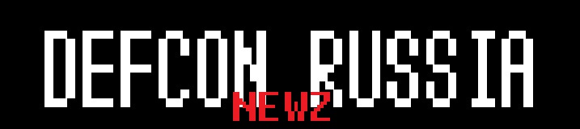

|  |
| defconrussia@gmail.com |
ENGLISH VERSION
Детали про теплоход
В этом году наше мероприятие снова поддерживает Digital Security и финансово помогает с оплатой теплохода :) Поэтому скидываемся мы всего по 500р (в прошлом году было по 300 и было очень сложно вписаться в эти бюджеты). Они пойдут на покупку напитков, закусок, аренду проектора и экрана.
Оплата
Оплатить можно с любой карты и без комиссии по ссылке: https://money.alfabank.ru/p2p/web/transfer/sbelov. В комментах указывайте свои ФИ (или ники). Крайняя даты оплаты - 1 сентября 18:00. Можно переводить за друзей, тогда указывайте всех в комментах. ВАЖНО: если вы оплатили, но не пришли - к сожалению, мы не сможем вернуть деньги, так как мы возьмем всю сумму и потратим разом.
Место и время
Теплоход будет ждать нас 3 сентября с 14:00 до 15:00 по адресу - Дворцовая наб. д. 18 (где и в прошлом году). В 15:00 мы отплываем и в 19:00 вернемся туда же, на Дворцовую наб. д. 18. Ждать никого не сможем, как и захватить по пути.
Ограничения
На теплоход вмещается максимум 100 человек и мы не сможем взять больше. Поэтому действует следующая схема - кто оплатил раньше, тот и проходит. Поэтому, пожалуйста, не затягивайте с оплатой. Как только мы соберем 100 человек - мы сразу закроем прием оплаты (сообщим письмом и в чате telegram). В прошлом году народ (кто не оплатил заранее) приходил прямо к отправлению теплохода, но мы никого не смогли взять, учтите это и не надейтесь на случайность. Есть личное ощущение, что в этом году места закончатся очень быстро.
Доклады
CFP еще открыто, хоть мы уже и получили несколько заявок (и фановых, и полноценных ресерчей). Полный список докладов сформируем перед мероприятием.
По вопросам можно писать в telegram - @sergeybelove. До встречи!